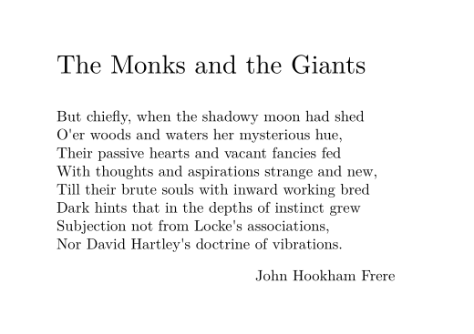
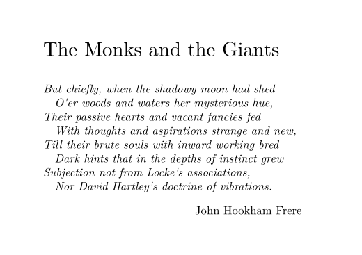
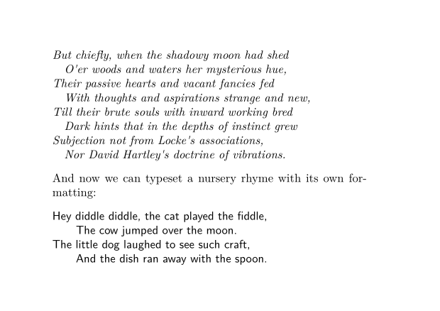
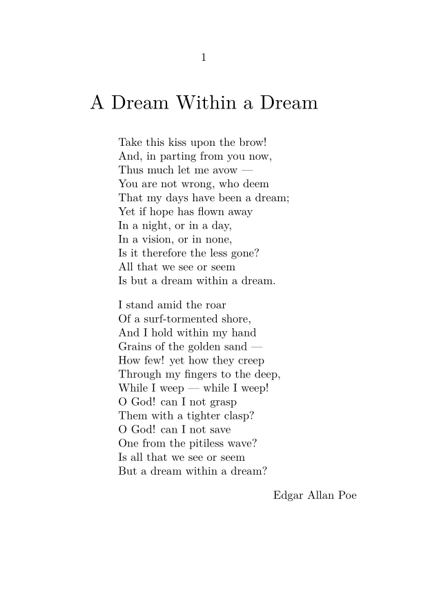

Contents
The lines environment
The usual way to set verse in ConTeXt is to enclose it in \startlines, which ensures that each new line in the code produces a line break in the compiled output. Additionally, \startlines has some arguments that can be used to configure how the lines of text look, such as their indentation patterns. As usual in ConTeXt, these arguments can be set up globally with \setuplines, and new "lines" environments created \definelines.
A simple example
For example, to set an excerpt from The Monks and the Giants by John Hookham Frere:
-
\setuppapersize[B8, landscape] \setuppagenumbering[location=none] \starttext \title{The Monks and the Giants} \startlines But chiefly, when the shadowy moon had shed O'er woods and waters her mysterious hue, Their passive hearts and vacant fancies fed With thoughts and aspirations strange and new, Till their brute souls with inward working bred Dark hints that in the depths of instinct grew Subjection not from Locke's associations, Nor David Hartley's doctrine of vibrations. \stoplines \hfill John Hookham Frere \stoptext
- 
Setting up lines
The \startlines command has several useful options for configuring the overall look of the text that it applies to. As is usual in ConTeXt, you can use \setuplines to set options globally, and square brackets after \startlines to set them locally. For example:
-
\setuppapersize[B8, landscape] \setuppagenumbering[location=none] \setuplines[indenting={yes, small, even}] \starttext \title{The Monks and the Giants} \startlines[style=italic] But chiefly, when the shadowy moon had shed O'er woods and waters her mysterious hue, Their passive hearts and vacant fancies fed With thoughts and aspirations strange and new, Till their brute souls with inward working bred Dark hints that in the depths of instinct grew Subjection not from Locke's associations, Nor David Hartley's doctrine of vibrations. \stoplines \hfill John Hookham Frere \stoptext
- 
The yes turns the indenting on, the small makes it a small amount, and the even makes it only for even-numbered lines. The style option controls the text formatting. To see all configuration options, visit the \setuplines page.
Defining new line environments
If you have different indentation patterns that you would like to use for verse in your documents, it would be good to give each one a defined name to refer to with \definelines. Then you can still make global adjustments to a single look with a single change, without affecting all the other looks that you have defined. For example:
-
\setuppapersize[A7, landscape] \setuppagenumbering[location=none] \definelines[ottavaRima] [indenting={yes, small, even}, style=italic] \definelines[nurseryRhyme] [indenting={yes, big, even}, style=sansserif] \starttext \startottavaRima But chiefly, when the shadowy moon had shed O'er woods and waters her mysterious hue, Their passive hearts and vacant fancies fed With thoughts and aspirations strange and new, Till their brute souls with inward working bred Dark hints that in the depths of instinct grew Subjection not from Locke's associations, Nor David Hartley's doctrine of vibrations. \stopottavaRima And now we can typeset a nursery rhyme with its own formatting: \startnurseryRhyme Hey diddle diddle, the cat played the fiddle, The cow jumped over the moon. The little dog laughed to see such craft, And the dish ran away with the spoon. \stopnurseryRhyme \stoptext
- 
Preventing pagebreaks
The commands \startlines, \setuplines, and \startuplines have many other options to configure the look of verse.
For example, you can specify commands to be executed before and after the verse with the before and after arguments. One way that this can be used is to prevent pagebreaks by enclosing the verse in \startframedtext \stopframedtext, as in:
\startlines[before={\startframedtext[frame=off]}, after=\stopframedtext] But chiefly, when the shadowy moon had shed O'er woods and waters her mysterious hue, Their passive hearts and vacant fancies fed With thoughts and aspirations strange and new, Till their brute souls with inward working bred Dark hints that in the depths of instinct grew Subjection not from Locke's associations, Nor David Hartley's doctrine of vibrations. \stoplines
See the documentation for \setuplines for further details of what can be customized.
Centering verse
Verse is commonly typeset in a left-aligned block, which is then horizontally centred on the page. There's no built-in environment which provides this functionality, but we can certaily create one.
Manually
If it is not a problem to figure out the longest line manually, then the solution is quite short:
-
\setuppapersize[A6] \setuphead[title][align=middle] \def\startpoem[#1]% {\begingroup \setbox0\hbox{#1}% \setupnarrower[left=\dimexpr(\the\hsize-\the\wd0)/2\relax]% \startnarrower[left]% \startlines} \def\stoppoem {\stoplines \stopnarrower \endgroup} \starttext %----------------------------------------- \title{A Dream Within a Dream} % Pass the longest line as the argument. \startpoem[That my days have been a dream;] \input poe \stoppoem \hfill Edgar Allan Poe \stoptext
- 
Automatically
With a bit more code, it is also possible to ask ConTeXt to figure things out for us:
-
\setuppapersize[A6] \setuphead[title][align=middle] \defineframedtext[poemframed] [width=\textwidth, autowidth=force, align=flushleft, before=, after=, frame=off, offset=none] \definenarrower[poemnarrower] \definelines[poemlines] [before={\startpoemnarrower[left]}, after=\stoppoemnarrower] \definebuffer[poem] \def\stoppoem{\setups{poems:buffer}} \startsetups poems:buffer \setupnarrower[poemnarrower][left=0pt] \setbox\scratchbox\vbox% {\poemframed {\startpoemlines \getpoem \stoppoemlines}} \edef\poemhsize{\the\dimexpr(\hsize-\wd\scratchbox)/2\relax} \setupnarrower[poemnarrower][left=\poemhsize] \startpoemlines \getpoem \stoppoemlines \stopsetups \starttext %----------------------------------------- \title{A Dream Within a Dream} \startpoem \input poe \stoppoem \hfill Edgar Allan Poe \stoptext